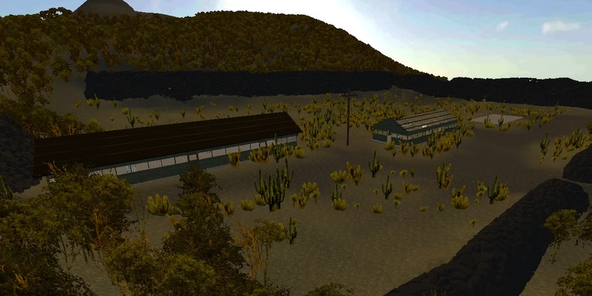
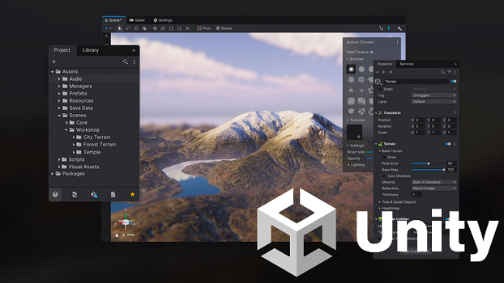
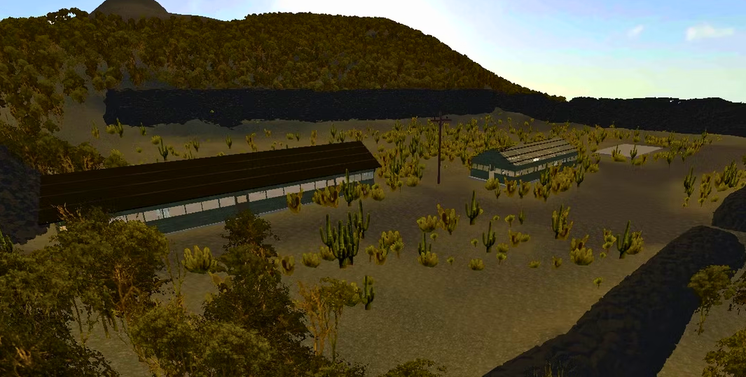
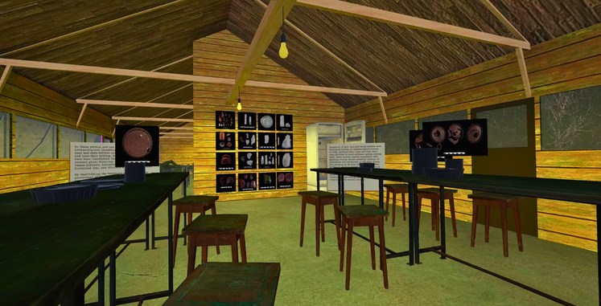
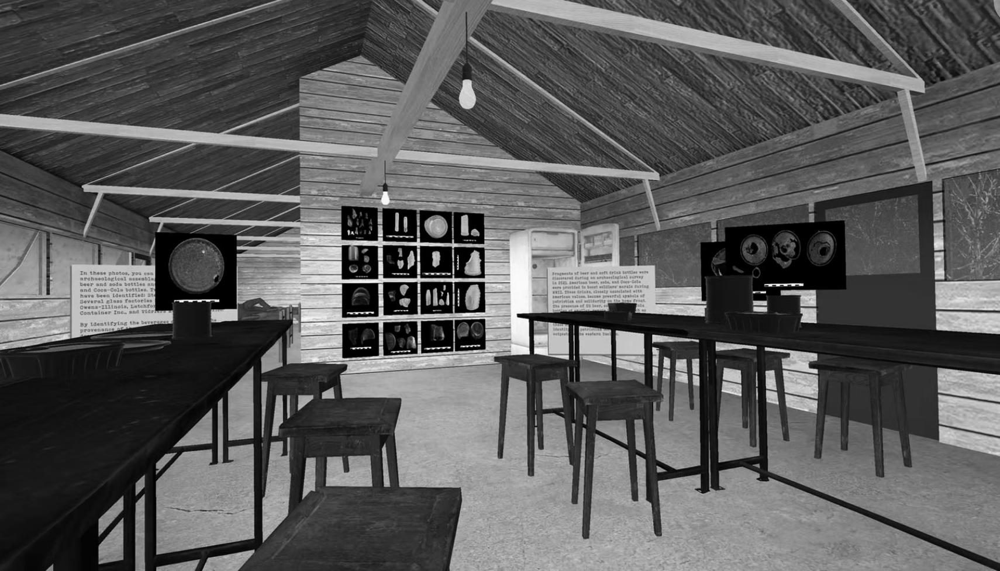
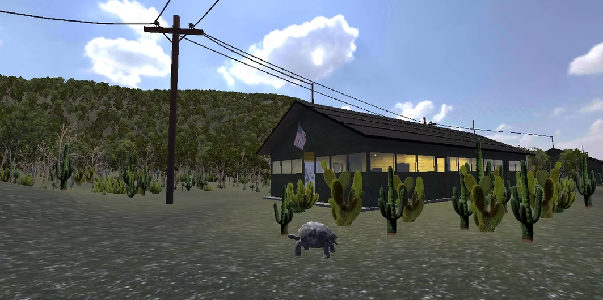

Narrativa y ambiente
La etapa creativa se centró en conceptualizar la experiencia inmersiva, definiendo narrativa, ambiente y forma de interacción para mantener equilibrio entre fidelidad histórica y experiencia sensorial.
Proyecto académico de realidad virtual creado para divulgar el contexto histórico del Muro de Lágrimas y convertirlo en una experiencia inmersiva, educativa e interactiva.

Muro de Lágrimas VR fue desarrollado para el área de Arqueología de la Universidad San Francisco de Quito y se enfoca en una locación histórica clave de Isla Isabela, Galápagos, asociada al sistema penitenciario y al trabajo forzado.

A pesar de su importancia histórica, el Muro de Lágrimas sigue siendo poco conocido por parte del público general. Las barreras geográficas y la ausencia de experiencias inmersivas limitan el acceso a esta memoria histórica.
Desarrollar una aplicación en realidad virtual que permita educar sobre el contexto histórico del Ecuador a través de una experiencia inmersiva centrada en el Muro de Lágrimas, con énfasis en arqueología y memoria histórica.

La etapa creativa se centró en conceptualizar la experiencia inmersiva, definiendo narrativa, ambiente y forma de interacción para mantener equilibrio entre fidelidad histórica y experiencia sensorial.

El desarrollo técnico implicó construir el entorno en Unity3D e implementar interacciones propias de realidad virtual, incluyendo una transición desde Unreal Engine hacia un entorno optimizado para VR.
Selección visual del proceso y los resultados del proyecto.



